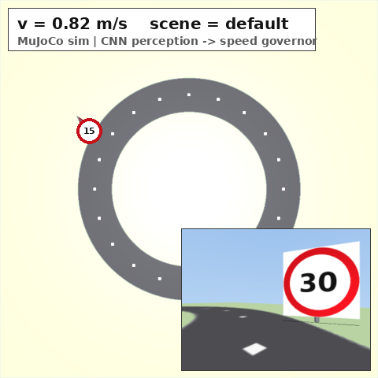
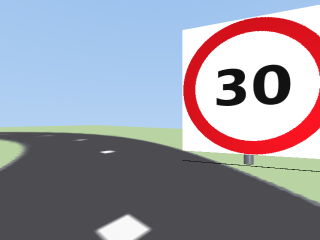
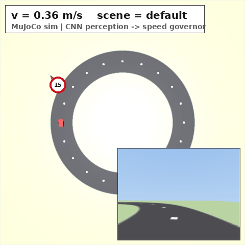
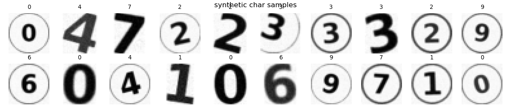
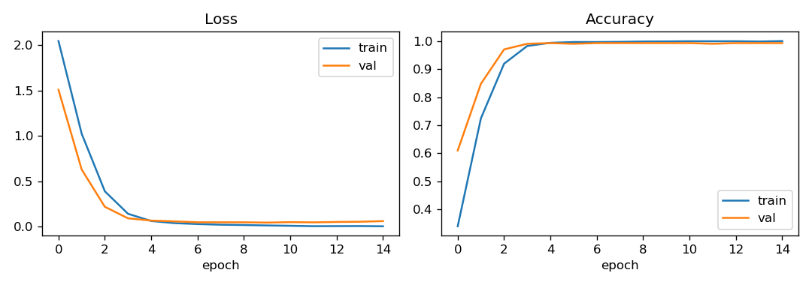
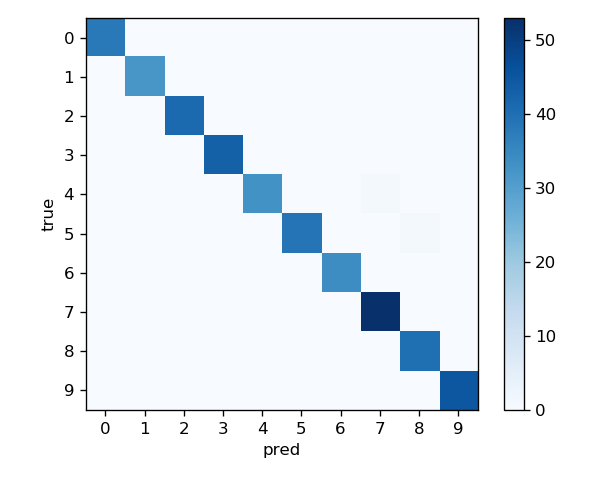
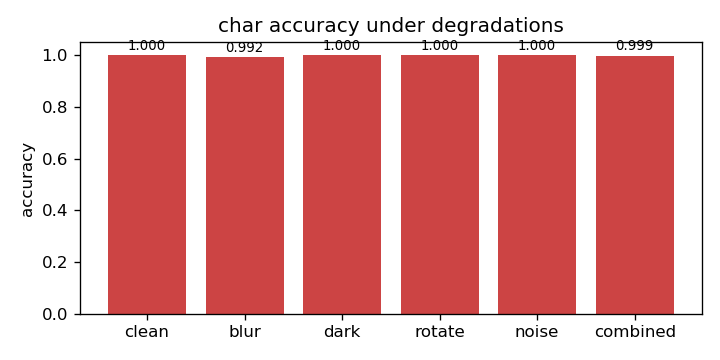
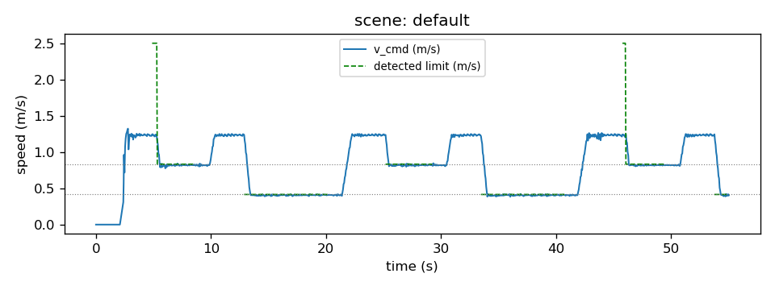
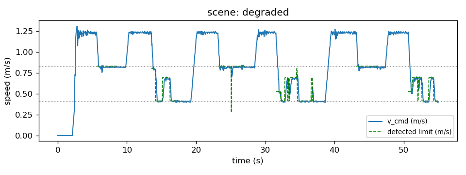
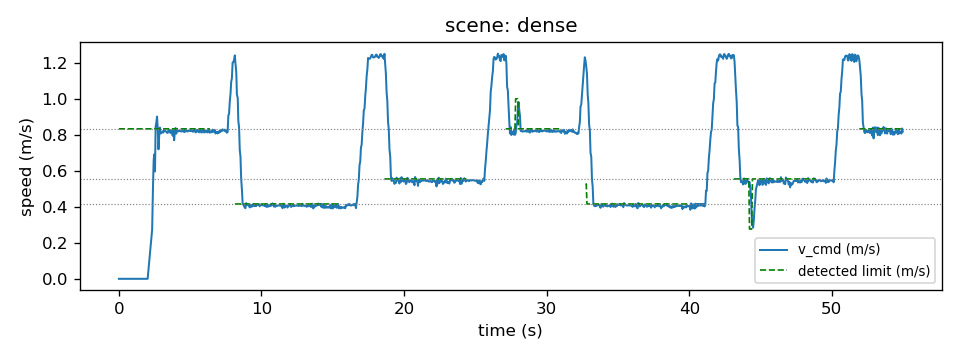

限速标志识别与神经网络限速控制
本模块对应课程任务（2）——传感器感知及运动控制：MuJoCo 物理仿真中车载相机采集 前视图像，卷积神经网络（CNN）读取限速标志数值，控制器据此对差速小车实施闭环 限速运动控制。
与已有 CARLA 版交通标志识别模块的区别：
carla_traffic_sign_recognition与carla_tsr_ros使用 YOLOv8 检测 stop sign 类别（刹车/直行二值控制）； 本模块识别限速数值本身（字符级 0-9 CNN → 任意两位数组合），并实现 连续速度闭环调节（限速值→目标速度→加速度限幅），感知与控制语义均不同。
功能
- MuJoCo 圆形赛道差速小车巡航（刚体动力学推进，预瞄 P 控制横向，速度闭环纵向）
- 车载前视相机（320x240，10 Hz）：MuJoCo 离屏渲染标志牌，支持旋转/模糊/暗光/噪声退化
- 感知流水线：HSV 红圈定位 → 圆内字符切分 → DigitCNN 字符识别 → 位值组合 → 滑窗防抖
- 限速器：目标速度取巡航与限速的较小值，加速度限幅平滑减速，驶离视野后延时解除
- 一键 launch 启动；预置 3 个场景（基准/强退化/密集牌序）；离屏渲染帧可一键合成 GIF
系统架构
MuJoCo 动力学+相机渲染] -- "/camera/image_raw (Image)" --> D[detector_node
HSV定位+CNN识别] D -- "/speed_limit (Int32)" --> V[driver_node
预瞄P控制+限速器] V -- "/cmd_vel (Twist)" --> W W -- "/world/odom (Odometry)" --> V
| 话题 | 类型 | 发布者 | 说明 |
|---|---|---|---|
/camera/image_raw |
sensor_msgs/Image |
world | 320x240 rgb8 前视图像，10 Hz |
/world/odom |
nav_msgs/Odometry |
world | 位姿与速度真值，20 Hz |
/speed_limit |
std_msgs/Int32 |
detector | 稳定限速值（km/h），-1 表示视野内无牌 |
/speed_limit_conf |
std_msgs/Float32 |
detector | 该值平均置信度 |
/detector/debug |
sensor_msgs/Image |
detector | 带定位框的调试图像 |
/cmd_vel |
geometry_msgs/Twist |
driver | 速度控制指令 |
环境与安装
-
Ubuntu 20.04 + ROS 2 Humble、Python 3.8、PyTorch ≥ 2.0 (CPU)、OpenCV、Pillow、MuJoCo ≥ 3.0（无头环境经 OSMesa 软渲染）
cd ~/ts_ws/src git clone <本仓库> # 或直接拷贝 src/ground/traffic_sign_speed_control cd ~/ts_ws pip3 install -r src/ground/traffic_sign_speed_control/requirements.txt colcon build --packages-select traffic_sign_speed_control source install/setup.bash
若 models/sign_cnn.pth 不存在，先训练（约 3 分钟，CPU）：
python3 src/ground/traffic_sign_speed_control/scripts/train_signs.py
运行步骤
1. 一键启动
ros2 launch traffic_sign_speed_control traffic_sign_speed_control.launch.py
| launch 参数 | 默认值 | 说明 |
|---|---|---|
render_mode |
file |
none 不渲染；file 离屏写帧（window 已弃用，按 file 处理） |
frame_dir |
/tmp/ts_frames |
file 模式帧输出目录（PNG，用于合成 GIF） |
scene |
default |
预置场景：default / degraded / dense |
启动后终端依次打印 world/detector/driver 的就绪日志。小车从角度 180° 处沿赛道 逆时针巡航，驶近"30"牌减速、驶离后恢复巡航，再驶近"15"牌再次减速，如下图：

（左：世界画布——圆形赛道、限速牌、红色小车、HUD、相机画中画； 右下画中画：车载相机原始图像）

2. 观察话题
ros2 topic echo /speed_limit # 接近标志时输出 30 / 15，其余为 -1
ros2 topic echo /cmd_vel # 限速生效时 linear.x 被压低
3. 合成演示 GIF
ros2 run traffic_sign_speed_control main demo # 需要 ffmpeg；frames/ 与 GIF 输出到当前工作目录
4. 完整演示

指令序列：巡航 1.25 m/s（45 km/h 缩比）→ 识别"30"→ 减速至 0.83 m/s → 驶离恢复 1.25 m/s → 识别"15"→ 减速至 0.42 m/s → 恢复巡航，基准场景限速区内零超速。
原理与公式
1. 差速小车刚体动力学
小车在 MuJoCo 中建模为刚体：底盘 + 两驱动轮（hinge 关节）+ 万向轮，/cmd_vel
的 (v, ω) 按差速关系换算为左右轮目标转速，由速度执行器（velocity actuator）
跟踪，物理以 2 ms 子步 implicitfast 积分推进（每 50 Hz 控制周期 10 个子步）：
其中 b 为半轮距（0.095 m），r 为驱动轮半径（0.035 m）。轮地摩擦产生实际 纵向速度与偏航角速度，里程计由 free joint 位姿差分得到。
2. 预瞄 P 控制（横向）
设赛道圆心 C、半径 R。取车头前方弧长 L_d 处的预瞄点，计算预瞄点航向与当前 航向的误差 e_θ（角度归一化到 (-π, π]），转角指令为：
3. 限速器与加速度限幅（纵向）
本平台为 1:10 缩比模型（赛道半径 2.5 m）：速度按几何相似缩放
v_sim = n / 36（n 为牌面 km/h 标注），牌面数值沿用真实交通标注。设巡航速度
v_c、感知限速 n，纵向控制为：
减速取 a = 1.6 m/s²，加速取 a = 1.0 m/s²，保证速度曲线连续可跟踪。
4. MuJoCo 车载相机
相机刚体安装于车头（高 0.2 m，水平视场 90°，分辨率 320x240），由 MuJoCo 离屏渲染器逐帧渲染。标志牌为边长 l_s = 0.6 m 的带纹理几何体，牌面中心 距地 0.35 m；距离 d、水平偏角 α 时，针孔投影近似给出牌面中心的图像横坐标 u 与牌面边长 s（像素）：
渲染以 2 倍分辨率超采样后 INTER_AREA 降采样回 320x240，避免远处牌面数字 笔画在缩采样中糊化；视距 4.5 m 外认为不可见（真值区间计算用）。
5. HSV 红色分割与圆形度
HSV 空间中红色分布在 H 两端，掩膜取 (0 ≤ H ≤ 8) 与 (172 ≤ H ≤ 180) 两区间并集 （S ≥ 90，V ≥ 60）。对每个连通域以圆形度筛选标志牌（A 为面积、P 为周长）：
再用最小外接圆半径 r ∈ [15, 110] px 过滤。
6. 字符 CNN（DigitCNN）
网络结构：Conv(1→16,3×3)-ReLU-MaxPool2 → Conv(16→32,3×3)-ReLU-MaxPool2 → Dropout(0.25) → FC(2048→128)-ReLU → FC(128→10)，
输入 32×32 灰度图。推理取 softmax 最大概率类别及置信度：
两位数牌面按位组合 value = 10·d1 + d2，单字符牌 value = d1。任一字符置信度 低于 0.60 时整帧判无效。
7. 滑窗防抖（多数票）
检测值序列进入长度 N = 5 的滑动窗口，稳定值取窗口内票数最多的非负读数 （≥ 2 票，同票数时置信度均值决胜），上锁与改判同规则；仅当整窗均为无牌（-1） 时才解除。相比"连续 N 帧一致"，多数票容忍退化场景下的散乱误读与掉帧， 同时防止单帧误读翻转已生效的限速。
算法流程
感知流水线
限速状态机
代码结构
| 文件 | 类型 | 职责 |
|---|---|---|
traffic_sign_speed_control/world_node.py |
节点 | 构建 MuJoCo 世界、50 Hz 控制周期 mj_step 推进、里程计/相机话题发布、俯视画布渲染与帧输出 |
traffic_sign_speed_control/mujoco_scene.py |
库 | 运行时生成 MJCF（赛道纹理/限速牌/差速小车/相机）、物理推进与相机离屏渲染 |
traffic_sign_speed_control/detector_node.py |
节点 | HSV 定位 → 字符切分 → CNN 推理 → 滑窗防抖，发布 /speed_limit |
traffic_sign_speed_control/driver_node.py |
节点 | 限速状态机与加速度限幅、预瞄 P 横向控制，发布 /cmd_vel |
traffic_sign_speed_control/scene.py |
库 | 3 个预置场景定义，支持 /world/scene_config 运行时热切换 |
traffic_sign_speed_control/sign_render.py |
库 | 标志牌纹理绘制（仿真材质与训练数据共用）、字符合成与增广、字符归一化 |
traffic_sign_speed_control/model.py |
库 | DigitCNN 网络定义与推理预处理 |
scripts/train_signs.py |
脚本 | 合成数据集生成与 CNN 训练（约 3 分钟，CPU） |
scripts/evaluate_detector.py |
脚本 | 检测器退化矩阵评测（6 种条件 × 10 类 × 100 张） |
scripts/run_scenes.py |
脚本 | 多场景端到端评测（进程组管理，指标统计与画图） |
traffic_sign_speed_control/main.py / launch/ |
入口 | ros2 run ... main CLI（train/evaluate/scenes/demo）与三节点一键启动 |
设计要点：
- 手工构造
sensor_msgs/Image（rgb8，step = width*3），零 cv_bridge 依赖； - 训练与推理共用
canonicalize_char()字符归一化（暗像素紧裁剪 → 方形白底 → 32×32），消除"训练字符带白边 / 相机字符满框"的分布不匹配； - 牌面以程序化纹理贴附 MuJoCo 几何体，同一套
draw_limit_sign()同时生成 仿真材质与训练数据，保证两域字形一致； - 车载相机 2 倍超采样渲染后 INTER_AREA 降采样，避免远处牌面笔画缩采样糊化； 牌面与立杆设为无碰撞（contype=0），不干扰小车动力学；
run_scenes.py以进程组管理三节点栈（start_new_session + killpg），保证多场景 连续评测无残留进程。
训练与数据
训练数据完全由程序合成（无需外部数据集）：0-9 每类 400 张，DejaVu/Liberation 粗体渲染 + 随机缩放平移 + 部分样本叠加红圈边缘模拟裁剪，再施加与相机相同的 退化增广（旋转 ±18°、模糊 σ≤1.2、亮度扰动、噪声）。划分 80/10/10， Adam（lr=1e-3）、batch 128、15 epoch，CPU 训练约 3 分钟。



测试集（400 张）准确率 99.5%（混淆矩阵仅 2 处错误：4→6、5→8），验证集 99.25% （合成同分布数据，下节退化矩阵给出更严格的逐条件泛化结果）。
多场景测试与性能评价
指标定义
- 识别延迟：牌进入相机视野真值时刻 → 防抖后
/speed_limit首次等于牌值的时延； - 达标时间：进入视野后，速度持续 1.0 s 满足误差不超过 max(0.05, 5%·v_lim) 的最短时间；
- 稳态误差：视野区间最后 2 s 内 |v − v_lim| 均值；
- 超速占比：达标之后区间内 v > v_lim + 容差的采样占比。
检测器退化矩阵
对 0-9 每个数字在 6 种退化条件下各生成 100 张合成样本（与训练增广同源但 参数独立随机），字符级准确率：

（数值由 scripts/evaluate_detector.py 评测生成）
场景端到端结果
每个场景以 render_mode:=none 运行真实 ROS 系统 55 s（约 3–4 圈），注入场景后
从小车复位起统计指标（由 scripts/run_scenes.py 生成场景 JSON 与速度曲线图）：
| 场景 | 标志序列 | 退化 | 检出率 | 平均识别延迟 | 平均达标时间 | 平均稳态误差 |
|---|---|---|---|---|---|---|
| default | 30 → 15 | 无 | 100% (2/2) | 0.68 s | 1.33 s | 0.010 m/s |
| degraded | 30 → 15 | 旋转12°/模糊1.4/暗光/噪声 | 100% (2/2) | 1.40 s | 2.95 s | 0.012 m/s |
| dense | 30 → 15 → 20 | 轻度 | 100% (3/3) | 0.39 s | 1.66 s | 0.012 m/s |
分解到逐牌（检出后能否在可见区间内把速度稳住）：
| 场景 | 牌 | 延迟 (s) | 达标时间 (s) | 稳态误差 (m/s) | 超速占比 |
|---|---|---|---|---|---|
| default | 30 | 0.90 | 1.65 | 0.012 | 0% |
| default | 15 | 0.45 | 1.00 | 0.008 | 0% |
| degraded | 30 | 1.15 | 2.00 | 0.012 | 0% |
| degraded | 15 | 1.66 | 3.90 | 0.012 | 0% |
| dense | 30 | 0.00 | 2.83 | 0.012 | 0% |
| dense | 15 | 0.81 | 1.35 | 0.013 | 0% |
| dense | 20 | 0.35 | 0.80 | 0.012 | 0% |
结果显示：感知全部命中（7/7 牌、三场景检出率均 100%），且全部牌在可见区间内 完成限速整定，限速区内零超速；强退化场景仅使识别延迟增加约 0.5–1.2 s、达标时间 相应延长（degraded-15 为 3.90 s），稳态误差保持在 0.012 m/s 量级。
调参方向
degraded-15 与 dense-30 的达标时间仍偏长（误读抑制与起步加速挤占减速窗口）， 可通过预瞄提前减速进一步压缩。
三场景速度跟踪曲线：



结果复现：
python3 src/ground/traffic_sign_speed_control/scripts/evaluate_detector.py
python3 src/ground/traffic_sign_speed_control/scripts/run_scenes.py --duration 55
端到端延迟
感知单帧耗时（ROI 定位 + 字符切分 + CNN 推理）实测约 2.5 ms（CPU i5 级虚拟机 6 核，20 帧均值），相机 10 Hz 下感知链路不构成瓶颈；从牌面进入视野到限速生效的 端到端延迟主要由多数票防抖（5 帧窗口 ≈ 0.2–0.5 s）、小尺寸牌面的识别置信度积累与 控制周期（0.05 s）共同决定。
已知限制
- MuJoCo 场景为程序化材质与光照渲染，未覆盖真实相机的畸变、曝光与运动模糊；
- 限速作用域为"牌面可见区间"，未建模真实交规中区段限速的延续语义 （可通过增加"解除限速"牌类扩展）；
- 字符分割对极端透视形变（牌面斜视 > 45°）鲁棒性有限，牌面朝向已按来车方向 预瞄摆放以缓解；
- 无 GPU 环境依赖 OSMesa 软件渲染，渲染帧率受 CPU 限制；
- 训练与测试均基于同一程序化渲染管线，未验证真实相机实拍图像。
大模型使用声明
使用 deep seek 辅助开发：ROS 2 节点与感知/控制代码的编写与调试、训练与评测 脚本、教程文档整理；实验方案、参数选择与全部验证结论经作者实际运行确认。